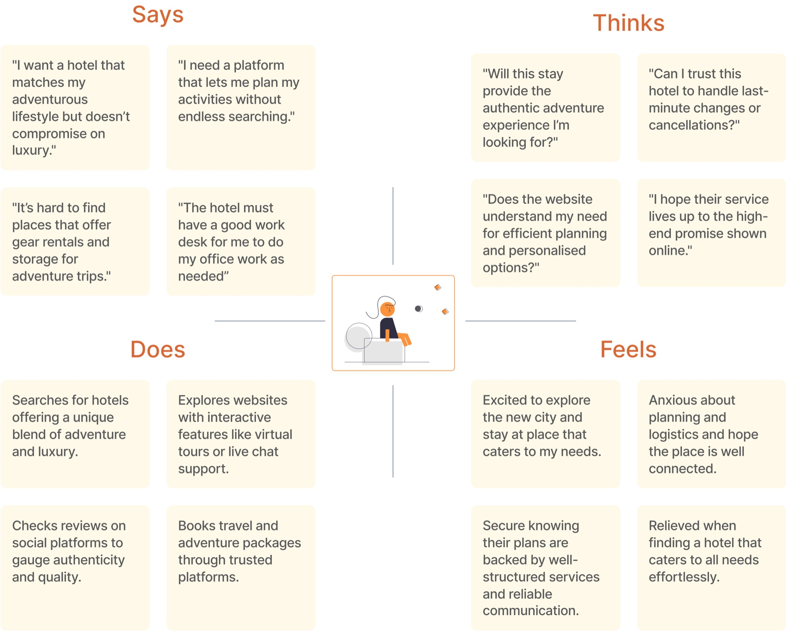
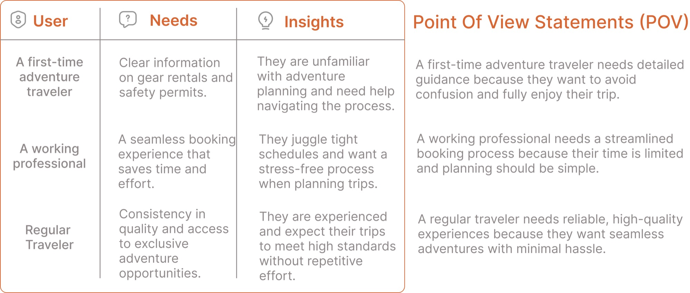
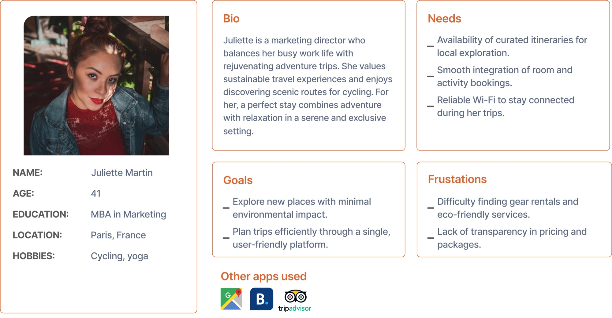
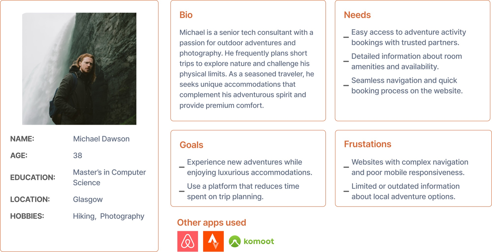
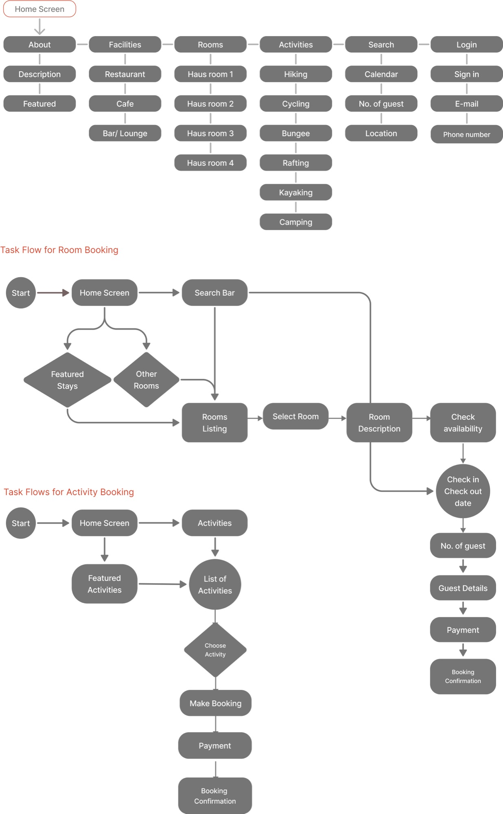
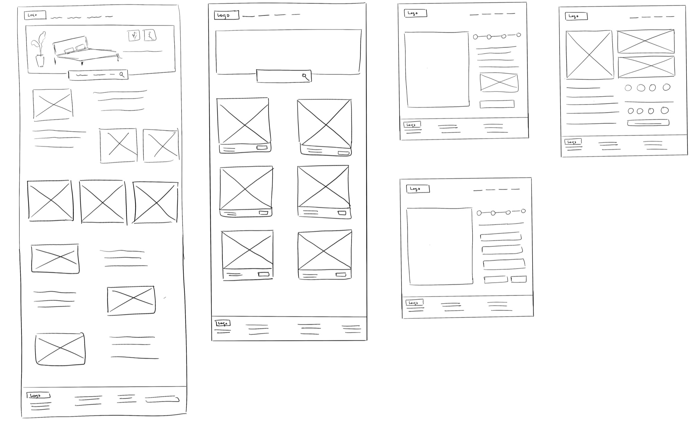
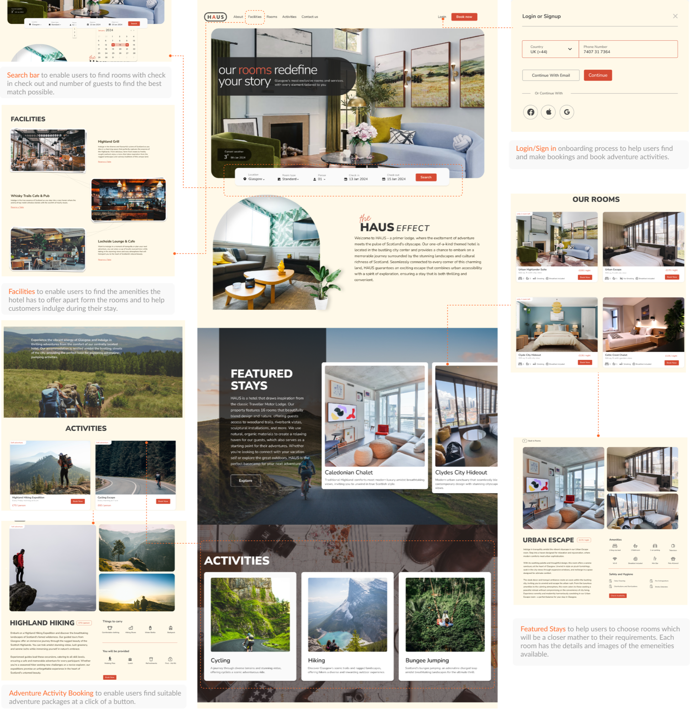
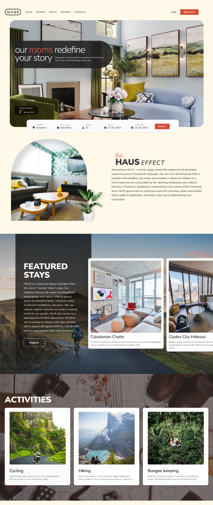

03 — Visual & Web Design
Haus Hotel
A website for a boutique Glasgow hotel that blends elegance and hospitality in every detail — where finding and reserving a room feels as considered as the stay itself.

01 · The Brief
Where rooms redefine your story
An immersive showcase paired with effortless booking.
Haus is one of Glasgow's most exclusive boutique hotels, with rooms and services tailored to every guest. The goal was a website that lives up to that promise — an editorial showcase of the property paired with a booking experience that feels effortless rather than transactional.
Process
Research, distilled
The full discovery-to-wireframe trail, for anyone who wants it.
Research Audience, empathy map & personas
Understanding the discerning guest — travellers who value design, comfort and a sense of occasion.





Competitor Analysis Benchmarking boutique hotels
Benchmarking boutique-hotel sites revealed an opportunity: most buried booking behind clutter. Haus would make reserving the most graceful moment on the page.


Wireframes & Iterations Structure, IA & flow
One continuous, unhurried path from browsing to booking.


Wireframes tested the layout and booking journey before any visual polish.


Visual Direction
Translating tactile luxury into pixels
Warm neutrals, refined type and generous imagery — from mood board to system.


Luxury online is mostly restraint — knowing exactly what to leave out.
Deliver
The final website
An immersive homepage that leads from inspiration to booking in one elegant scroll.

↕ scroll inside the frame to explore the full landing page


↕ scroll inside the frame to view more pages
In Motion
Haus, brought to life
Reflection & Prototype
What I learned
Designing for luxury taught me the discipline of subtraction — every element earns its place, and white space does as much work as imagery. My illustrator's eye for composition translated directly to pacing the page.
View the full visual design & prototype ↗